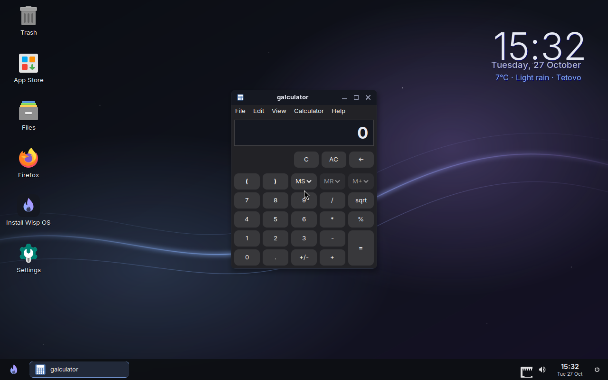
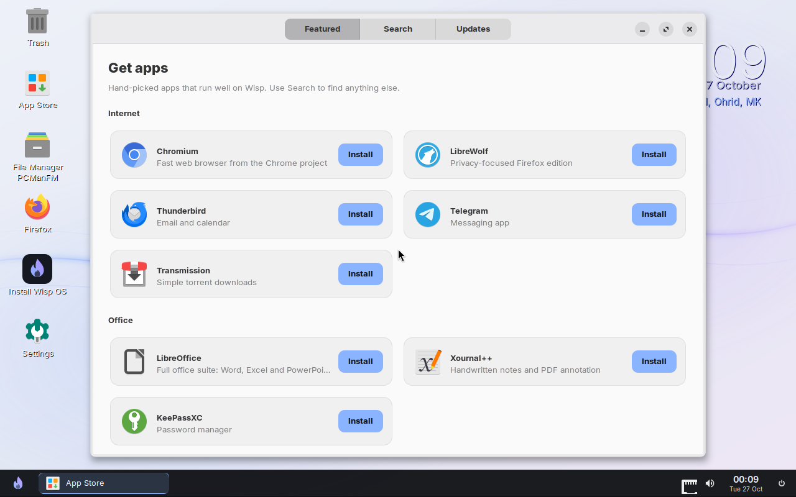
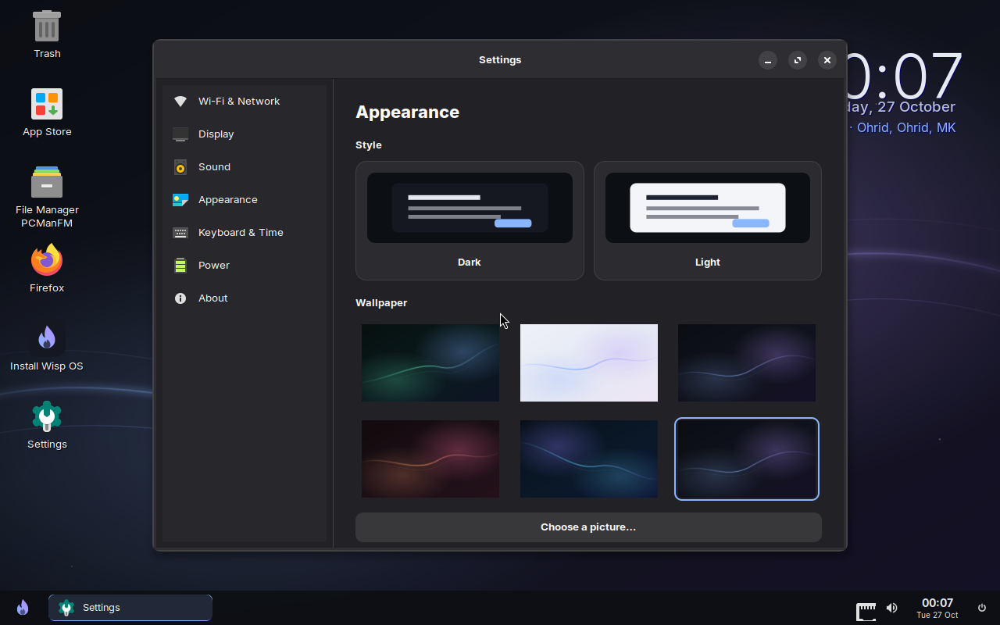
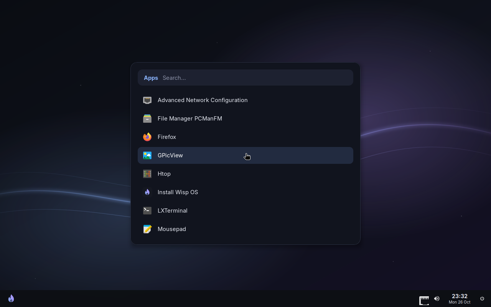

<meta charset="utf-8">
<meta name="viewport" content="width=device-width, initial-scale=1, viewport-fit=cover">
<title>Wisp OS</title>
<meta name="claude:viewport-fit-sides" content="cover">
<meta name="description" content="Wisp OS is a free, lightweight Linux desktop for older computers. It runs Firefox and everyday apps on 1 GB of RAM.">
<link rel="icon" href="img/wisp.svg">
<link rel="preconnect" href="https://fonts.googleapis.com">
<link rel="preconnect" href="https://fonts.gstatic.com" crossorigin>
<link rel="stylesheet" href="https://fonts.googleapis.com/css2?family=Atkinson+Hyperlegible+Next:wght@400;600;700&family=Schibsted+Grotesk:wght@600;800&family=JetBrains+Mono:wght@500&display=swap">
<style>
/* Layout: a plain manual-style product page. One column of sections, each with a short heading,
   a sentence of explanation and then the real thing (screenshot, steps, table). Colour is used
   only for actions and for the numbered markers on the desktop map. */
:root {
  --bg: #f4f5f7;
  --surface: #ffffff;
  --line: #dcdfe6;
  --ink: #15171d;
  --ink-2: #474d5c;
  --ink-3: #6c7385;
  --accent: #2f52c4;
  --accent-ink: #ffffff;
  --accent-soft: #e5eafa;
  --warn-bg: #fff4e0;
  --warn-line: #f0c674;
  --warn-ink: #5c3d00;
  --head: "Schibsted Grotesk", "Helvetica Neue", Arial, sans-serif;
  --body: "Atkinson Hyperlegible Next", "Atkinson Hyperlegible", "Segoe UI", system-ui, sans-serif;
  --mono: "JetBrains Mono", ui-monospace, Menlo, Consolas, monospace;
  --wrap: 1080px;
}
@media (prefers-color-scheme: dark) {
  :root:not([data-theme="light"]) {
    --bg: #0e1015; --surface: #161921; --line: #2a2f3c; --ink: #e9ebf1; --ink-2: #b1b7c6; --ink-3: #848ca0;
    --accent: #8ab4ff; --accent-ink: #0d0f14; --accent-soft: #1b2440;
    --warn-bg: #2a2110; --warn-line: #6b5420; --warn-ink: #f3d9a4;
    color-scheme: dark;
  }
}
:root[data-theme="dark"] {
  --bg: #0e1015; --surface: #161921; --line: #2a2f3c; --ink: #e9ebf1; --ink-2: #b1b7c6; --ink-3: #848ca0;
  --accent: #8ab4ff; --accent-ink: #0d0f14; --accent-soft: #1b2440;
  --warn-bg: #2a2110; --warn-line: #6b5420; --warn-ink: #f3d9a4;
  color-scheme: dark;
}
* { box-sizing: border-box; }
html { scroll-behavior: smooth; }
body { margin: 0; background: var(--bg); color: var(--ink); font: 400 1.0625rem/1.65 var(--body); }
body::before { content: ""; position: fixed; inset: 0 0 auto; height: env(safe-area-inset-top, 0px); z-index: 10; background: var(--surface); }
a { color: var(--accent); text-underline-offset: 3px; }
a:focus-visible, button:focus-visible, summary:focus-visible { outline: 2px solid var(--accent); outline-offset: 3px; border-radius: 6px; }
h1, h2, h3 { font-family: var(--head); font-weight: 800; letter-spacing: -0.015em; line-height: 1.15; margin: 0; text-wrap: balance; }
h2 { font-size: clamp(1.6rem, 3.4vw, 2.2rem); }
h3 { font-size: 1.15rem; font-weight: 600; letter-spacing: 0; }
p { margin: 0; }
img { display: block; max-width: 100%; height: auto; }
.wrap { max-width: var(--wrap); margin: 0 auto; padding-left: max(20px, env(safe-area-inset-left, 0px)); padding-right: max(20px, env(safe-area-inset-right, 0px)); }
.muted { color: var(--ink-2); }
.small { font-size: 0.9rem; color: var(--ink-3); }
kbd { font: 500 0.8em/1 var(--mono); background: var(--surface); border: 1px solid var(--line); border-bottom-width: 2px; border-radius: 5px; padding: 3px 6px; white-space: nowrap; color: var(--ink); }
code { font: 500 0.88em var(--mono); }

/* buttons */
.btn { display: inline-flex; align-items: center; gap: 8px; padding: 12px 18px; border-radius: 8px; font: 600 1rem/1 var(--body); text-decoration: none; border: 1px solid transparent; }
.btn-primary { background: var(--accent); color: var(--accent-ink); }
.btn-primary:hover { filter: brightness(1.08); }
.btn-secondary { background: var(--surface); color: var(--ink); border-color: var(--line); }
.btn-secondary:hover { border-color: var(--ink-3); }
.btn .size { font-weight: 400; opacity: .8; }
.actions { display: flex; flex-wrap: wrap; gap: 10px; }

/* header */
.top { position: sticky; top: env(safe-area-inset-top, 0px); z-index: 20; background: var(--surface); border-bottom: 1px solid var(--line); }
.top .wrap { display: flex; align-items: center; gap: 24px; padding-block: 12px; }
.brand { display: flex; align-items: center; gap: 10px; text-decoration: none; color: var(--ink); font: 800 1.1rem/1 var(--head); }
.brand img { width: 28px; height: 28px; }
.top nav { display: flex; gap: 22px; margin-left: auto; }
.top nav a { color: var(--ink-2); text-decoration: none; font-size: 0.97rem; }
.top nav a:hover { color: var(--ink); }
.top .btn { padding: 9px 14px; font-size: 0.95rem; }

/* sections */
section { padding-block: clamp(56px, 8vw, 96px); border-bottom: 1px solid var(--line); }
section:last-of-type { border-bottom: 0; }
.head { display: grid; gap: 12px; max-width: 680px; margin-bottom: 36px; }
.head p { color: var(--ink-2); font-size: 1.1rem; }
.alt { background: var(--surface); }

/* hero */
.hero { padding-block: clamp(48px, 7vw, 80px) clamp(48px, 7vw, 80px); }
.hero-text { display: grid; gap: 20px; max-width: 720px; }
.hero h1 { font-size: clamp(2.3rem, 5.6vw, 3.8rem); }
.hero .lede { font-size: 1.2rem; color: var(--ink-2); max-width: 60ch; }
.facts { display: flex; flex-wrap: wrap; gap: 8px 22px; padding: 0; margin: 4px 0 0; list-style: none; color: var(--ink-2); font-size: 0.97rem; }
.facts li::before { content: "✓"; color: var(--accent); font-weight: 700; margin-right: 7px; }
.shot { margin-top: 44px; border: 1px solid var(--line); border-radius: 10px; overflow: hidden; background: #0b0d13; }

/* three points */
.points { display: grid; grid-template-columns: repeat(3, minmax(0, 1fr)); gap: 32px; }
.points div { display: grid; gap: 8px; align-content: start; border-top: 3px solid var(--accent); padding-top: 18px; }
.points p { color: var(--ink-2); }

/* desktop map */
.map { position: relative; border: 1px solid var(--line); border-radius: 10px; overflow: hidden; background: #0b0d13; }
.pin {
  position: absolute; transform: translate(-50%, -50%);
  width: 30px; height: 30px; border-radius: 50%; display: grid; place-items: center;
  background: #ffd25e; color: #1a1300; font: 700 0.95rem/1 var(--body);
  border: 2px solid #1a1300; box-shadow: 0 0 0 3px rgba(255, 210, 94, .35);
}
.legend { list-style: none; padding: 0; margin: 28px 0 0; display: grid; grid-template-columns: repeat(2, minmax(0, 1fr)); gap: 18px 36px; }
.legend li { display: grid; grid-template-columns: 30px minmax(0, 1fr); gap: 14px; align-items: start; }
.legend .num { width: 30px; height: 30px; border-radius: 50%; display: grid; place-items: center; background: #ffd25e; color: #1a1300; font: 700 0.95rem/1 var(--body); }
.legend b { display: block; }
.legend span.muted { display: block; font-size: 0.98rem; }
.tip { margin-top: 28px; padding: 14px 18px; border: 1px solid var(--line); border-radius: 8px; background: var(--surface); color: var(--ink-2); }

/* first steps */
.steps { list-style: none; padding: 0; margin: 0; display: grid; gap: 40px; counter-reset: step; }
.steps > li { display: grid; grid-template-columns: minmax(0, 1fr) minmax(0, 1.25fr); gap: 36px; align-items: center; counter-increment: step; }
.steps .txt { display: grid; gap: 10px; }
.steps .txt h3::before { content: counter(step) ". "; color: var(--accent); }
.steps .txt p { color: var(--ink-2); }
.steps img { border: 1px solid var(--line); border-radius: 8px; }
.path { font-size: 0.95rem; color: var(--ink-2); }
.path b { color: var(--ink); font-weight: 600; }

/* shortcuts */
.table-wrap { overflow-x: auto; border: 1px solid var(--line); border-radius: 10px; background: var(--surface); }
table { width: 100%; border-collapse: collapse; font-size: 1rem; }
th, td { text-align: left; padding: 12px 18px; border-bottom: 1px solid var(--line); vertical-align: top; }
tr:last-child td { border-bottom: 0; }
th { font: 600 0.85rem/1.4 var(--body); color: var(--ink-3); text-transform: uppercase; letter-spacing: .06em; }
td:first-child { white-space: nowrap; width: 38%; }

/* memory */
.mem { display: grid; grid-template-columns: minmax(0, 1.2fr) minmax(0, 1fr); gap: 48px; align-items: start; }
.bar { display: flex; height: 40px; border-radius: 6px; overflow: hidden; border: 1px solid var(--line); background: var(--bg); }
.bar .used { background: var(--accent); }
.scale { display: flex; justify-content: space-between; font: 500 0.78rem var(--mono); color: var(--ink-3); margin-top: 8px; font-variant-numeric: tabular-nums; }
.memlist { list-style: none; margin: 24px 0 0; padding: 0; }
.memlist li { display: flex; justify-content: space-between; gap: 16px; padding: 9px 0; border-bottom: 1px solid var(--line); }
.memlist li span:last-child { font-family: var(--mono); font-size: 0.92rem; color: var(--ink-2); font-variant-numeric: tabular-nums; white-space: nowrap; }
.memlist .total { font-weight: 700; }
.memlist .total span:last-child { color: var(--ink); }
.compare { display: grid; gap: 16px; }
.cmp header { display: flex; justify-content: space-between; gap: 12px; font-size: 0.98rem; }
.cmp header span:last-child { font-family: var(--mono); font-size: 0.9rem; color: var(--ink-2); }
.track { height: 10px; border-radius: 5px; background: var(--bg); border: 1px solid var(--line); overflow: hidden; margin-top: 6px; }
.track i { display: block; height: 100%; background: var(--ink-3); }
.cmp.wisp .track i { background: var(--accent); }
.cmp.wisp header span:first-child { font-weight: 700; }

/* install */
.install { display: grid; grid-template-columns: minmax(0, 1.3fr) minmax(0, 1fr); gap: 48px; align-items: start; }
.howto { list-style: none; padding: 0; margin: 0; display: grid; gap: 22px; counter-reset: s; }
.howto li { display: grid; grid-template-columns: 36px minmax(0, 1fr); gap: 14px; counter-increment: s; }
.howto li::before { content: counter(s); width: 36px; height: 36px; border-radius: 50%; display: grid; place-items: center; border: 2px solid var(--accent); color: var(--accent); font: 700 1rem/1 var(--body); }
.howto b { display: block; margin-bottom: 2px; }
.howto p { color: var(--ink-2); }
.warn { margin-top: 28px; padding: 16px 18px; border-radius: 8px; background: var(--warn-bg); border: 1px solid var(--warn-line); color: var(--warn-ink); }
.warn b { display: block; margin-bottom: 4px; }
.side { display: grid; gap: 22px; padding: 24px; border: 1px solid var(--line); border-radius: 10px; background: var(--surface); }
.side h3 { font-size: 1.05rem; }
.side ul { margin: 6px 0 0; padding-left: 20px; color: var(--ink-2); }
.side li { margin: 4px 0; }
.hash { font: 500 0.75rem/1.5 var(--mono); color: var(--ink-3); word-break: break-all; background: var(--bg); border: 1px solid var(--line); border-radius: 6px; padding: 10px; }

/* faq */
.faq { max-width: 780px; border-top: 1px solid var(--line); }
.faq details { border-bottom: 1px solid var(--line); }
.faq summary { cursor: pointer; list-style: none; padding: 18px 36px 18px 0; position: relative; font: 600 1.08rem/1.4 var(--body); }
.faq summary::-webkit-details-marker { display: none; }
.faq summary::after { content: "+"; position: absolute; right: 4px; top: 14px; font: 400 1.5rem/1 var(--body); color: var(--ink-3); }
.faq details[open] summary::after { content: "–"; }
.faq details > div { padding: 0 0 20px; color: var(--ink-2); display: grid; gap: 10px; max-width: 68ch; }

footer { padding-block: 36px 52px; color: var(--ink-3); font-size: 0.95rem; border-top: 1px solid var(--line); }
footer .wrap { display: flex; flex-wrap: wrap; gap: 12px 28px; align-items: center; }
footer .brand { font-size: 1rem; }
footer .links { display: flex; gap: 20px; margin-left: auto; }

@media (max-width: 860px) {
  .top nav { display: none; }
  .top .btn { margin-left: auto; }
  .points, .mem, .install { grid-template-columns: minmax(0, 1fr); }
  .steps > li { grid-template-columns: minmax(0, 1fr); gap: 16px; }
  .legend { grid-template-columns: minmax(0, 1fr); }
}
@media (max-width: 560px) {
  .pin { width: 20px; height: 20px; font-size: 0.7rem; border-width: 1.5px; box-shadow: none; }
  td:first-child { white-space: normal; }
  footer .links { margin-left: 0; }
}
@media (prefers-reduced-motion: reduce) { html { scroll-behavior: auto; } }
</style>

<header class="top">
  <div class="wrap">
    <a class="brand" href="#top">Wisp OS</a>
    <nav aria-label="Sections">
      <a href="#around">Using Wisp</a>
      <a href="#first-steps">First steps</a>
      <a href="#install">Install</a>
      <a href="#faq">Questions</a>
    </nav>
    <a class="btn btn-primary" href="#install">Download</a>
  </div>
</header>

<main id="top">
  <section class="hero">
    <div class="wrap">
      <div class="hero-text">
        <h1>Make an old laptop useful again.</h1>
        <p class="lede">Wisp OS is a free operating system for older computers. It replaces a slow Windows with a clean, modern desktop that runs Firefox, documents and music on as little as 1&nbsp;GB of memory.</p>
        <div class="actions">
          <a class="btn btn-primary" href="https://github.com/vetonfetai/wispos/releases/download/v0.1/wisp-os-0.1-x86_64.iso">Download Wisp OS <span class="size">902 MB</span></a>
          <a class="btn btn-secondary" href="#install">How to install</a>
        </div>
        <ul class="facts">
          <li>Free, no account needed</li>
          <li>Uses 167 MB of memory when idle</li>
          <li>Try it from a USB stick first</li>
        </ul>
      </div>
      <div class="shot">
        
      </div>
    </div>
  </section>

  <section class="alt">
    <div class="wrap">
      <div class="points">
        <div>
          <h3>Fast on old hardware</h3>
          <p>No background clutter. The whole desktop uses about 167 MB, which leaves the rest of the memory for your browser and apps.</p>
        </div>
        <div>
          <h3>Ready to use</h3>
          <p>Firefox, a word processor, spreadsheets, a PDF reader, music and video, a file manager and an App Store with thousands more apps.</p>
        </div>
        <div>
          <h3>Simple to look after</h3>
          <p>All settings are in one Settings app. Updates for Wisp and all your apps arrive in one place, with one button.</p>
        </div>
      </div>
    </div>
  </section>

  <section id="around">
    <div class="wrap">
      <div class="head">
        <h2>Find your way around</h2>
        <p>This is the Wisp desktop. If you have used Windows, most of it will feel familiar: apps open from the button in the bottom-left corner, and open windows show in the bar along the bottom.</p>
      </div>
      <div class="map">
        
        <span class="pin" style="left:2.3%;top:91%">1</span>
        <span class="pin" style="left:12.9%;top:91%">2</span>
        <span class="pin" style="left:88.5%;top:91%">3</span>
        <span class="pin" style="left:98%;top:91%">4</span>
        <span class="pin" style="left:9.5%;top:30%">5</span>
        <span class="pin" style="left:58.6%;top:20%">6</span>
        <span class="pin" style="left:79%;top:11%">7</span>
      </div>
      <ol class="legend">
        <li><span class="num">1</span><div><b>Apps button</b><span class="muted">Click it to see all your apps and search them by name. You can also press <kbd>Super</kbd> + <kbd>Space</kbd> (the Windows key) from anywhere.</span></div></li>
        <li><span class="num">2</span><div><b>Open windows</b><span class="muted">Every open app shows here. Click one to bring it to the front, or press <kbd>Alt</kbd> + <kbd>Tab</kbd> to switch.</span></div></li>
        <li><span class="num">3</span><div><b>Wi-Fi, sound and clock</b><span class="muted">Click the network icon to pick a Wi-Fi network. Scroll on the speaker to change the volume, or click it for sound settings.</span></div></li>
        <li><span class="num">4</span><div><b>Power</b><span class="muted">Lock, sleep, restart or shut down.</span></div></li>
        <li><span class="num">5</span><div><b>Desktop shortcuts</b><span class="muted">Double-click to open the App Store, Files, Firefox or Settings. "Install Wisp OS" only shows while you are trying Wisp from a USB stick.</span></div></li>
        <li><span class="num">6</span><div><b>Window buttons</b><span class="muted">Minimise, maximise and close. Drag the title bar to move a window. <kbd>Super</kbd> + <kbd>←</kbd> or <kbd>→</kbd> fills half the screen.</span></div></li>
        <li><span class="num">7</span><div><b>Clock and weather</b><span class="muted">Shows the weather for your town when you're online. You can hide it in Settings → Desktop &amp; Taskbar.</span></div></li>
      </ol>
      <p class="tip"><b>Tip:</b> right-click an empty part of the desktop for a menu with your main apps, Settings and the power options.</p>
    </div>
  </section>

  <section id="first-steps" class="alt">
    <div class="wrap">
      <div class="head">
        <h2>Your first ten minutes</h2>
        <p>When Wisp starts for the first time, a Welcome window offers the first three of these.</p>
      </div>
      <ol class="steps">
        <li>
          <div class="txt">
            <h3>Connect to the internet</h3>
            <p>Click the network icon in the bottom-right corner and choose your Wi-Fi. A network cable works on its own, with nothing to set up.</p>
            <p class="path">Or: <b>Settings → Wi-Fi &amp; Network</b></p>
          </div>
          
        </li>
        <li>
          <div class="txt">
            <h3>Get the apps you need</h3>
            <p>Open the App Store from the desktop. Popular apps like Chromium, LibreOffice, VLC and GIMP are one click away, and Search finds thousands more.</p>
            <p class="path">Desktop → <b>App Store</b></p>
          </div>
          
        </li>
        <li>
          <div class="txt">
            <h3>Make it yours</h3>
            <p>Pick dark or light, a wallpaper and an accent colour. Settings also has the screen size, night light, touchpad, keyboard layout and time zone.</p>
            <p class="path"><b>Settings → Appearance</b></p>
          </div>
          
        </li>
        <li>
          <div class="txt">
            <h3>Find anything fast</h3>
            <p>Press <kbd>Super</kbd> + <kbd>Space</kbd> and start typing an app's name, then press Enter. It's the quickest way to open anything.</p>
            <p class="path">Keyboard: <b>Super + Space</b></p>
          </div>
          
        </li>
      </ol>
    </div>
  </section>

  <section id="shortcuts">
    <div class="wrap">
      <div class="head">
        <h2>Keyboard shortcuts</h2>
        <p><kbd>Super</kbd> is the key with the Windows logo on most keyboards.</p>
      </div>
      <div class="table-wrap">
        <table>
          <thead><tr><th>Press</th><th>To</th></tr></thead>
          <tbody>
            <tr><td><kbd>Super</kbd> + <kbd>Space</kbd></td><td>Search for an app and open it</td></tr>
            <tr><td><kbd>Alt</kbd> + <kbd>Tab</kbd></td><td>Switch between open windows</td></tr>
            <tr><td><kbd>Super</kbd> + <kbd>←</kbd> / <kbd>→</kbd></td><td>Put a window on the left or right half of the screen</td></tr>
            <tr><td><kbd>Super</kbd> + <kbd>↑</kbd> / <kbd>↓</kbd></td><td>Maximise or minimise a window</td></tr>
            <tr><td><kbd>Alt</kbd> + <kbd>F4</kbd></td><td>Close a window</td></tr>
            <tr><td><kbd>Super</kbd> + <kbd>B</kbd> / <kbd>E</kbd></td><td>Open Firefox / open Files</td></tr>
            <tr><td><kbd>Super</kbd> + <kbd>I</kbd></td><td>Open Settings</td></tr>
            <tr><td><kbd>Super</kbd> + <kbd>L</kbd></td><td>Lock the screen</td></tr>
            <tr><td><kbd>Print Screen</kbd></td><td>Take a screenshot (saved in Pictures)</td></tr>
            <tr><td><kbd>Ctrl</kbd> + <kbd>Alt</kbd> + <kbd>Delete</kbd></td><td>Open the Task Manager to close a stuck app</td></tr>
          </tbody>
        </table>
      </div>
    </div>
  </section>

  <section id="memory" class="alt">
    <div class="wrap">
      <div class="head">
        <h2>Why it's fast</h2>
        <p>Wisp only runs what a desktop needs. Here is a 1 GB computer right after starting Wisp, drawn to scale.</p>
      </div>
      <div class="mem">
        <div>
          <div class="bar" role="img" aria-label="167 of 964 megabytes in use"><span class="used" style="width:calc(100% * 167 / 964)"></span></div>
          <div class="scale"><span>0</span><span>250 MB</span><span>500 MB</span><span>750 MB</span><span>964 MB</span></div>
          <ul class="memlist">
            <li><span>Display and window manager</span><span>34 MB</span></li>
            <li><span>Taskbar, desktop icons and clock</span><span>38 MB</span></li>
            <li><span>Wi-Fi, sound and other services</span><span>48 MB</span></li>
            <li><span>Linux kernel and memory buffers</span><span>47 MB</span></li>
            <li class="total"><span>In use</span><span>167 MB</span></li>
            <li><span>Left for your apps</span><span>651 MB</span></li>
          </ul>
        </div>
        <div class="compare">
          <h3>Memory used right after starting</h3>
          <div class="cmp wisp"><header><span>Wisp OS</span><span>167 MB</span></header><div class="track"><i style="width:5.6%"></i></div></div>
          <div class="cmp"><header><span>A typical Ubuntu desktop</span><span>about 1.3 GB</span></header><div class="track"><i style="width:43%"></i></div></div>
          <div class="cmp"><header><span>Windows 11</span><span>about 2.8 GB</span></header><div class="track"><i style="width:93%"></i></div></div>
          <p class="small">Wisp measured with <code>free -m</code> on a 1 GB machine. The other two are typical figures and vary by computer.</p>
          <p class="muted">If memory ever runs out, Wisp closes the biggest browser tab before the computer can freeze.</p>
        </div>
      </div>
    </div>
  </section>

  <section id="install">
    <div class="wrap">
      <div class="head">
        <h2>Try it, then install it</h2>
        <p>You can run Wisp from a USB stick without changing anything on the computer. If you like it, install it from the desktop.</p>
      </div>
      <div class="install">
        <div>
          <ol class="howto">
            <li><div><b>Download the file</b><p>One file, <code>wisp-os-0.1-x86_64.iso</code>, about 900 MB.</p></div></li>
            <li><div><b>Put it on a USB stick</b><p>Install <a href="https://etcher.balena.io/">balenaEtcher</a> (free, for Windows, Mac and Linux). Choose the file, choose the USB stick, and click Flash. Anything already on the stick is erased.</p></div></li>
            <li><div><b>Start the computer from the USB stick</b><p>Plug in the stick, switch the computer on and press the boot menu key straight away: <kbd>F12</kbd> on ThinkPads and Dell, <kbd>F9</kbd> on HP, <kbd>F12</kbd> or <kbd>F2</kbd> on Lenovo IdeaPads, <kbd>Esc</kbd> on ASUS. Pick the USB stick.</p></div></li>
            <li><div><b>Try it</b><p>Wisp starts in about a minute. Everything runs from the stick, so the computer's own files are untouched. Check that Wi-Fi, sound and the touchpad work.</p></div></li>
            <li><div><b>Install</b><p>Double-click <b>Install Wisp OS</b> on the desktop, pick the disk, and set a password. Take the stick out and restart when it says it's done.</p></div></li>
          </ol>
          <div class="warn" role="note">
            <b>Installing replaces everything on the disk you pick.</b>
            Windows and all files on that disk are deleted. Copy your photos and documents somewhere else first. Trying Wisp from the USB stick deletes nothing.
          </div>
        </div>
        <aside class="side">
          <div>
            <a class="btn btn-primary" href="https://github.com/vetonfetai/wispos/releases/download/v0.1/wisp-os-0.1-x86_64.iso">Download Wisp OS 0.1 <span class="size">902 MB</span></a>
          </div>
          <div>
            <h3>You need</h3>
            <ul>
              <li>A 64-bit PC or laptop with an Intel or AMD processor</li>
              <li>1 GB of memory or more (2 GB is comfortable)</li>
              <li>8 GB of disk space</li>
              <li>A USB stick of 2 GB or more</li>
            </ul>
          </div>
          <div>
            <h3>Check the download (optional)</h3>
            <p class="small">The SHA-256 checksum of the file:</p>
            <div class="hash">e0c9b1328d4aae70042af8a5b045f68c0d8e8eeb682fe164911c654774837512</div>
          </div>
        </aside>
      </div>
    </div>
  </section>

  <section id="faq" class="alt">
    <div class="wrap">
      <div class="head">
        <h2>Questions</h2>
      </div>
      <div class="faq">
        <details>
          <summary>Is Wisp OS really free?</summary>
          <div><p>Yes. There is nothing to buy, no account and no ads. Wisp is built on Alpine Linux, which is free and open source, and its own code is on <a href="https://github.com/vetonfetai/wispos">GitHub</a>.</p></div>
        </details>
        <details>
          <summary>Will it delete Windows?</summary>
          <div><p>Only if you install it. Running Wisp from the USB stick changes nothing on the computer. Installing replaces everything on the disk you choose, including Windows, so back up your files first. Wisp can't yet be installed alongside Windows.</p></div>
        </details>
        <details>
          <summary>Can I run Windows programs like Microsoft Office or Photoshop?</summary>
          <div><p>No, Windows programs don't run on Wisp. There are free alternatives in the App Store: LibreOffice opens Word, Excel and PowerPoint files, GIMP edits photos, and web apps like Gmail, Google Docs and Office 365 work in Firefox.</p></div>
        </details>
        <details>
          <summary>How do I install more apps?</summary>
          <div><p>Open the App Store from the desktop. The first tab has hand-picked apps; Search finds anything in Alpine Linux's catalogue of thousands of packages. Click Install and it's added to your apps.</p></div>
        </details>
        <details>
          <summary>How do updates work?</summary>
          <div><p>Wisp checks for updates once a day and shows a notification when there are some. Open <b>Settings → Updates</b> and click Install updates. This updates Wisp itself and every app at once. Your files and settings are kept.</p></div>
        </details>
        <details>
          <summary>My Wi-Fi doesn't show up. What can I do?</summary>
          <div><p>Wisp includes drivers for most Intel, Realtek, Atheros and MediaTek Wi-Fi chips. Some Broadcom chips, common in older HP and Dell laptops, aren't supported yet. A network cable or a cheap USB Wi-Fi adapter works in the meantime.</p></div>
        </details>
        <details>
          <summary>Does it work on a Mac?</summary>
          <div><p>Not on Macs with Apple chips (M1 and newer). Older Intel Macs may start it, but they aren't tested. To just try Wisp on any computer, you can run it in a virtual machine.</p></div>
        </details>
        <details>
          <summary>An app stopped responding. How do I close it?</summary>
          <div><p>Press <kbd>Ctrl</kbd> + <kbd>Alt</kbd> + <kbd>Delete</kbd> to open the Task Manager, select the app and click End task.</p></div>
        </details>
        <details>
          <summary>What's coming next?</summary>
          <div><p>More apps in the App Store through Flathub (Spotify, Discord, Zoom and others), a list of laptops tested to work, and installing next to Windows.</p></div>
        </details>
      </div>
    </div>
  </section>
</main>

<footer>
  <div class="wrap">
    <a class="brand" href="#top">Wisp OS</a>
    <span>Free and open source, built on Alpine Linux.</span>
    <span class="links">
      <a href="https://github.com/vetonfetai/wispos">Source code</a>
      <a href="https://github.com/vetonfetai/wispos/releases">All releases</a>
    </span>
  </div>
</footer>
